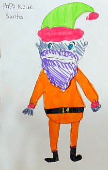

Vendredi passé je voulais vaie Bill Huelin par affaithes et nou m'dit que je l'trouvethais à l'office du "Morning News," ch'est pourtchi je m'y en fus.
Mais, en d'vallant Halkett Place, je vis en d'vant d'l'office un attroupement de pus de deux chents personnes et des "motor-cars" de stationnées le long du pavé, toutes décorées et couvertes de ouaddinne pour erprésenter d'la nè.
Je dis à mé-même, "Tch'est don qu'i' peut y aver en allant? Est-che des neuches?" Et pis je pensi que che n'pouvait pas être chenna, car touos les membres du "staff" sont déjà mathiés.
"Ch'est p't être un baptême! Y a p't-être des jumiaux siez Bill Huelin!"
En appréchant un mio pus près, je r'mertchi que y avait un vier "Father Christmas" de mâté à côté de châque automobile, i' y en avait treis tout ensemblye, et que Moussieu Smith, le photograph, était à les photographier.
Je n'pus pas passer à travers de la foule, ch'est pourtchi je voltigi par en d'sus d'lus têtes et je m'jutchi sus l'haut d'une maison à poupettes qu'était dans l'office.
Mes chiers anmins, mais i' y en avait-t-i' du rêmouage là d'dans!
Et tchi mouoché de marchandises!
I' y avait des patchets de toutes les espèces dépis l'plianchais jusqu'au pliafons.
Par la conversation alentou d'mé, j'apprins bain vite qu'i' s'agissait d'une distribtution de jouettes et d'présents à touos les pouores êfants de dans la ville et qu'les treis "Santa Claus" étaient pour aller les distribuer à lus adresses avec l'aide des "Motors" gracieusement prêtés par lus propriétaithes généreux, quatre messieux bain connus pour lus sympathie pour les pauvres.
Madame Duret Aubin, qu'a prins un vif intéthêt dans la "scheme" dès le c'menchement, était présente à survillyi la grande oeuvre de charité. Occhupée comme oulle 'tait, oulle êpaîgni oquo tchiques minutes de san temps pour ténin conversation avec le pouore Caouain, un bonheur de tchi que j'me félicite et que je n'sis pas prêt de roublier.
Driéthe le conteux, Fraînque Miché et sa charmante dame étaient bain embarrassés à arrangi touos les dons dans l'ordre qu'ils 'taient pour aller, et deustrais "Boy Scouts" les portaient en d'hors et aidgaient à chergi les "automobiles." Poussé par ma tchuthiosité habituelle, je vouli vaie tchil effet que v'là tch'éthait sus les mousse qui r'chév'thaient toutes ches belles choses-là, alors je m'jutchi driéthe iun des "motors" et cache nouos v'là aller.
Dès qu'j'arrêtimes dans la rue ouais que j'avions affaithe, i' sortait des mousses et des femmes de presque toutes les portes et ch'tait des hourras et des cris de "Here's Father Christmas!" Et pis les pus hardis d'mandaient au bouonhomme "Have you got anything for me?"
Quand il lus avait donné lus patchèt, je vos asseuthe qu'i' n'taient pas longtemps à l'ouvri, et le plaisi et la jouaie que la pus simplye jouette causait à ches pouores petits marmots-là, aithait rêjouit l'tchoeu du pus endueurchi ou du pus mélancolique.
Qui me sait permins, comme iun qu'a veu une partie d'la distribution avec mes propres yiers, d'asseuther à toutes les âmes charitablyes qui y ont contribué qu'i' n'peuvent pas s'former une idée du bonheur et d'la jouaie qu'ils ont apporté dans la vie de toutes ches p'tites gens-là.
Malheutheusement la minséthe existe dans bain des parties d'la ville, et peut-être que dans d'nombreux cas i' y a d'la faute ès pathents.
Bain souvent les pouores êfants sont les victimes de circonstances sus lestchelles i' n'ont auchune contrôle et il est bain êvident qu'ils ont à enduther bain des privations et bain des souffrances d'un but d'lannée à l'autre. Grâce à l'initiative et l'intéthêt des personnes charitablyes que j'ai mentionné pus haut, il a 'té possiblye de donne bain du plaisi duthant les fêtes de Noué, à pis de deux mille êfants de parmi les pus pauvres.
Que Dieu bénisse toutes les bouannes gens qu'ont contribué à la bouanne oeuvre et lus donne les moyens et les sentiments de r'doubier lus êfforts l'année tchi vaint.
Viyiz étout: